GO 對戰聯盟 · CP 1500
Pokémon GO 超級聯盟排名 Top 100
超級聯盟限制 CP 1500，比的不是誰 CP 高，而是屬性、招式和耐久的組合。這份榜單依 PvPoke 對戰模擬的分數排序， 列出前 100 名寶可夢與推薦招式；想知道你手上那隻的 IV 排第幾，點右邊的「查 IV」直接帶入。
- 資料更新 2026-11-05
- 收錄 1154 隻・顯示前 100 名
- ★ 傳說招式
- 1
 美錄梅塔鋼93.9一般電擊特殊鋼拳雙擊★、爆裂拳查 IV
美錄梅塔鋼93.9一般電擊特殊鋼拳雙擊★、爆裂拳查 IV - 2七夕青鳥龍飛行92.8一般龍息特殊月亮之力★、噴射火焰查 IV
- 3
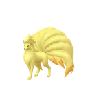
九尾暗影火92.6一般火花★特殊氣象球 火、能量球★查 IV - 4謎擬Ｑ幽靈妖精92.0一般暗影爪特殊影子偷襲、嬉鬧查 IV
- 5
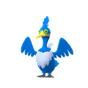
古月鳥飛行水91.6一般啄特殊衝浪、飛翔查 IV - 6
 巨鍛匠妖精鋼91.6一般妖精之風特殊巨力錘★、重踏查 IV
巨鍛匠妖精鋼91.6一般妖精之風特殊巨力錘★、重踏查 IV - 7七夕青鳥暗影龍飛行91.5一般龍息特殊月亮之力★、噴射火焰查 IV
- 8
 鋼鎧鴉飛行鋼91.4一般潑沙特殊空氣利刃★、鐵頭★查 IV
鋼鎧鴉飛行鋼91.4一般潑沙特殊空氣利刃★、鐵頭★查 IV - 9
 太陽珊瑚（伽勒爾）幽靈91.3一般驚嚇特殊黑夜魔影、力量寶石查 IV
太陽珊瑚（伽勒爾）幽靈91.3一般驚嚇特殊黑夜魔影、力量寶石查 IV - 10
 花潔夫人妖精91.3一般妖精之風特殊潑冷水★、月亮之力查 IV
花潔夫人妖精91.3一般妖精之風特殊潑冷水★、月亮之力查 IV - 11
 沼王暗影水地面91.2一般泥巴射擊特殊水流尾★、尖石攻擊查 IV
沼王暗影水地面91.2一般泥巴射擊特殊水流尾★、尖石攻擊查 IV - 12沼王水地面91.1一般泥巴射擊特殊水流尾★、尖石攻擊查 IV
- 13鋼鎧鴉暗影飛行鋼91.0一般潑沙特殊空氣利刃★、鐵頭★查 IV
- 14九尾火90.9一般火花★特殊氣象球 火、能量球★查 IV
- 15
 土王毒地面90.6一般毒針特殊地震、尖石攻擊查 IV
土王毒地面90.6一般毒針特殊地震、尖石攻擊查 IV - 16
 三首惡龍暗影惡龍90.6一般龍息特殊狂舞揮打★、飛翔查 IV
三首惡龍暗影惡龍90.6一般龍息特殊狂舞揮打★、飛翔查 IV - 17
 勾魂眼暗影惡幽靈90.6一般暗影爪特殊欺詐、吸取拳查 IV
勾魂眼暗影惡幽靈90.6一般暗影爪特殊欺詐、吸取拳查 IV - 18
 狐大盜惡90.5一般突襲特殊暗襲要害、冰凍之風★查 IV
狐大盜惡90.5一般突襲特殊暗襲要害、冰凍之風★查 IV - 19
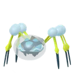
滴蛛霸水蟲90.4一般死纏爛打特殊水之波動、鏡面反射查 IV - 20
 胖嘟嘟水幽靈90.3一般禍不單行特殊衝浪、暗影球查 IV
胖嘟嘟水幽靈90.3一般禍不單行特殊衝浪、暗影球查 IV - 21
 泥巴魚地面電90.3一般電擊特殊泥巴炸彈、放電查 IV
泥巴魚地面電90.3一般電擊特殊泥巴炸彈、放電查 IV - 22
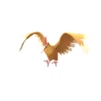
大嘴雀一般飛行90.2一般啄特殊啄鑽、直衝鑽查 IV - 23
 嘎啦嘎啦地面90.1一般擲泥特殊骨棒、岩崩查 IV
嘎啦嘎啦地面90.1一般擲泥特殊骨棒、岩崩查 IV - 24
 卡比獸一般90.1一般精神波特殊泰山壓頂、地震查 IV
卡比獸一般90.1一般精神波特殊泰山壓頂、地震查 IV - 25
 月亮伊布惡90.1一般大聲咆哮特殊惡之波動、珍藏★查 IV
月亮伊布惡90.1一般大聲咆哮特殊惡之波動、珍藏★查 IV - 26過動猿一般90.1一般抓特殊泰山壓頂、重踏查 IV
- 27
 棄世猴格鬥幽靈90.0一般踢倒特殊憤怒之拳★、冰凍拳查 IV
棄世猴格鬥幽靈90.0一般踢倒特殊憤怒之拳★、冰凍拳查 IV - 28巨翅飛魚水飛行90.0一般翅膀攻擊特殊龍捲風、水之波動查 IV
- 29
 轟擂金剛猩草90.0一般抓特殊鼓擊、大地之力查 IV
轟擂金剛猩草90.0一般抓特殊鼓擊、大地之力查 IV - 30
 瑪力露麗水妖精89.9一般泡沫特殊冰凍光束、嬉鬧查 IV
瑪力露麗水妖精89.9一般泡沫特殊冰凍光束、嬉鬧查 IV - 31
 小碎鑽岩石妖精89.9一般落石特殊岩崩、月亮之力查 IV
小碎鑽岩石妖精89.9一般落石特殊岩崩、月亮之力查 IV - 32
 頑皮雷彈（洗翠）電草89.9一般電擊特殊瘋狂伏特、能量球查 IV
頑皮雷彈（洗翠）電草89.9一般電擊特殊瘋狂伏特、能量球查 IV - 33棄世猴暗影格鬥幽靈89.8一般踢倒特殊憤怒之拳★、冰凍拳查 IV
- 34滴蛛霸暗影水蟲89.8一般死纏爛打特殊水之波動、鏡面反射查 IV
- 35帝王拿波水鋼89.8一般金屬音特殊加農水砲★、啄鑽查 IV
- 36帝王拿波暗影水鋼89.8一般金屬音特殊加農水砲★、啄鑽查 IV
- 37
 拉普拉斯水冰89.8一般精神波特殊泡影詠歎調、冰凍光束★查 IV
拉普拉斯水冰89.8一般精神波特殊泡影詠歎調、冰凍光束★查 IV - 38勾魂眼惡幽靈89.8一般暗影爪特殊欺詐、力量寶石查 IV
- 39過動猿暗影一般89.8一般抓特殊劈瓦、岩崩查 IV
- 40
 代歐奇希斯（防禦）超能力89.7一般踢倒特殊精神突進、十萬伏特查 IV
代歐奇希斯（防禦）超能力89.7一般踢倒特殊精神突進、十萬伏特查 IV - 41
 惡食大王惡龍89.7一般龍尾特殊狂舞揮打、污泥炸彈查 IV
惡食大王惡龍89.7一般龍尾特殊狂舞揮打、污泥炸彈查 IV - 42
 烏賊王暗影惡超能力89.7一般精神波特殊欺詐、蠻力查 IV
烏賊王暗影惡超能力89.7一般精神波特殊欺詐、蠻力查 IV - 43
 蟲電寶蟲電89.6一般伏特替換★特殊十字剪、放電查 IV
蟲電寶蟲電89.6一般伏特替換★特殊十字剪、放電查 IV - 44
 大力鱷水89.6一般暗影爪特殊加農水砲★、冰凍光束查 IV
大力鱷水89.6一般暗影爪特殊加農水砲★、冰凍光束查 IV - 45烏賊王惡超能力89.6一般精神波特殊蠻力、欺詐查 IV
- 46卡比獸暗影一般89.6一般精神波特殊泰山壓頂、蠻力查 IV
- 47吃吼霸水89.4一般攀瀑特殊衝浪、逆鱗查 IV
- 48蟲電寶暗影蟲電89.3一般伏特替換★特殊十字剪、放電查 IV
- 49
 大尾立一般89.3一般突襲特殊高速星星、起草查 IV
大尾立一般89.3一般突襲特殊高速星星、起草查 IV - 50
 河馬獸地面89.3一般潑沙特殊氣象球 岩石、大地之力查 IV
河馬獸地面89.3一般潑沙特殊氣象球 岩石、大地之力查 IV - 51
 禿鷹娜惡飛行89.3一般大聲咆哮特殊惡之波動、暗影球查 IV
禿鷹娜惡飛行89.3一般大聲咆哮特殊惡之波動、暗影球查 IV - 52
 恰雷姆格鬥超能力89.3一般精神利刃特殊冰凍拳、爆裂拳查 IV
恰雷姆格鬥超能力89.3一般精神利刃特殊冰凍拳、爆裂拳查 IV - 53
 莫魯貝可（滿腹花紋）電惡89.3一般電擊特殊氣場輪、精神之牙查 IV
莫魯貝可（滿腹花紋）電惡89.3一般電擊特殊氣場輪、精神之牙查 IV - 54
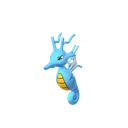
刺龍王水龍89.2一般龍息特殊衝浪、高速星星查 IV - 55佛烈托斯暗影蟲鋼89.1一般伏特替換特殊流沙地獄、岩石封鎖查 IV
- 56
 毽子棉草飛行89.1一般妖精之風特殊能量球、雜技★查 IV
毽子棉草飛行89.1一般妖精之風特殊能量球、雜技★查 IV - 57
 水箭龜水89.0一般咬住特殊加農水砲★、火箭頭錘查 IV
水箭龜水89.0一般咬住特殊加農水砲★、火箭頭錘查 IV - 58大力鱷暗影水89.0一般暗影爪特殊加農水砲★、冰凍光束查 IV
- 59刺龍王暗影水龍89.0一般龍息特殊衝浪、高速星星查 IV
- 60
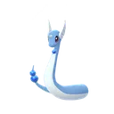
哈克龍暗影龍88.9一般龍息特殊緊束、水流尾查 IV - 61河馬獸暗影地面88.9一般潑沙特殊氣象球 岩石、大地之力查 IV
- 62拉普拉斯暗影水冰88.8一般精神波特殊泡影詠歎調、冰凍光束★查 IV
- 63
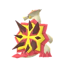
爆焰龜獸火龍88.8一般燒盡特殊狂舞揮打、龍爪查 IV - 64
 搖籃百合岩石草88.7一般溶解液特殊岩石封鎖、打草結查 IV
搖籃百合岩石草88.7一般溶解液特殊岩石封鎖、打草結查 IV - 65
 九尾（阿羅拉）冰妖精88.7一般細雪特殊氣象球 冰、潑冷水★查 IV
九尾（阿羅拉）冰妖精88.7一般細雪特殊氣象球 冰、潑冷水★查 IV - 66
 彷徨夜靈暗影幽靈88.6一般禍不單行特殊冰凍拳、暗影拳查 IV
彷徨夜靈暗影幽靈88.6一般禍不單行特殊冰凍拳、暗影拳查 IV - 67佛烈托斯蟲鋼88.6一般伏特替換特殊流沙地獄、岩石封鎖查 IV
- 68
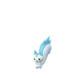
帕奇利茲電88.6一般伏特替換特殊十萬伏特、雷電拳查 IV - 69白海獅水冰88.5一般冰礫★特殊冰凍之風★、直衝鑽查 IV
- 70九尾（阿羅拉）暗影冰妖精88.5一般細雪特殊氣象球 冰、潑冷水★查 IV
- 71
 掘地兔一般地面88.4一般泥巴射擊特殊火焰拳、熱沙大地查 IV
掘地兔一般地面88.4一般泥巴射擊特殊火焰拳、熱沙大地查 IV - 72三首惡龍惡龍88.4一般龍息特殊狂舞揮打★、飛翔查 IV
- 73
 火焰鳥（伽勒爾）惡飛行88.4一般突襲特殊飛翔、勇鳥猛攻查 IV
火焰鳥（伽勒爾）惡飛行88.4一般突襲特殊飛翔、勇鳥猛攻查 IV - 74
 巨沼怪水地面88.3一般泥巴射擊特殊加農水砲★、地震查 IV
巨沼怪水地面88.3一般泥巴射擊特殊加農水砲★、地震查 IV - 75巨沼怪暗影水地面88.2一般泥巴射擊特殊加農水砲★、地震查 IV
- 76
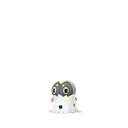
堅盾劍怪（盾牌）鋼幽靈88.0一般精神利刃特殊暗影球、陀螺球查 IV - 77
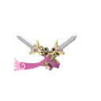
雙劍鞘鋼幽靈88.0一般暗影爪特殊聖劍、鐵頭查 IV - 78彷徨夜靈幽靈88.0一般禍不單行特殊冰凍拳、暗影拳查 IV
- 79
 黑夜魔靈暗影幽靈87.8一般驚嚇特殊爆裂拳、暗影拳查 IV
黑夜魔靈暗影幽靈87.8一般驚嚇特殊爆裂拳、暗影拳查 IV - 80嘎啦嘎啦暗影地面87.8一般擲泥特殊骨棒、岩崩查 IV
- 81蟾蜍王水地面87.8一般泥巴射擊特殊大地之力、冰凍之風查 IV
- 82哈克龍龍87.7一般龍息特殊水流尾、龍之波動查 IV
- 83
 烈箭鷹火飛行87.7一般燒盡★特殊飛翔、勇鳥猛攻查 IV
烈箭鷹火飛行87.7一般燒盡★特殊飛翔、勇鳥猛攻查 IV - 84操陷蛛蟲87.6一般暗影爪特殊猛撲、岩石封鎖查 IV
- 85
 噗噗豬超能力87.3一般精神波特殊爆裂拳、暗影球查 IV
噗噗豬超能力87.3一般精神波特殊爆裂拳、暗影球查 IV - 86
 皮可西妖精87.2一般妖精之風特殊月亮之力、彗星拳查 IV
皮可西妖精87.2一般妖精之風特殊月亮之力、彗星拳查 IV - 87
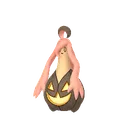
南瓜怪人（大尺寸）幽靈草87.2一般燒盡特殊暗影球、種子炸彈查 IV - 88南瓜怪人（特大尺寸）幽靈草87.2一般燒盡特殊暗影球、種子炸彈查 IV
- 89
 大鋼蛇暗影鋼地面87.2一般雷電牙特殊精神之牙、咬碎查 IV
大鋼蛇暗影鋼地面87.2一般雷電牙特殊精神之牙、咬碎查 IV - 90泥巴魚（伽勒爾）地面鋼87.1一般泥巴射擊特殊岩崩、地震查 IV
- 91南瓜怪人（普通尺寸）幽靈草87.0一般燒盡特殊暗影球、種子炸彈查 IV
- 92
 雷吉斯奇魯鋼87.0一般鎖定特殊加農光炮、真氣彈查 IV
雷吉斯奇魯鋼87.0一般鎖定特殊加農光炮、真氣彈查 IV - 93智揮猩一般超能力86.9一般念力特殊狂舞揮打、起草查 IV
- 94
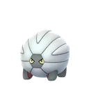
甲殼龍暗影龍86.9一般龍息特殊龍捲風、噴射火焰查 IV - 95
 龍王蠍暗影毒惡86.8一般毒針特殊咬碎、水流尾查 IV
龍王蠍暗影毒惡86.8一般毒針特殊咬碎、水流尾查 IV - 96南瓜怪人（小尺寸）幽靈草86.8一般燒盡特殊暗影球、種子炸彈查 IV
- 97
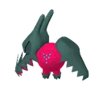
雷吉鐸拉戈龍86.8一般龍息★特殊巨龍威能★、夾住查 IV - 98烈箭鷹暗影火飛行86.8一般燒盡★特殊蓄能焰襲、飛翔查 IV
- 99毽子棉暗影草飛行86.6一般妖精之風特殊能量球、雜技★查 IV
- 100
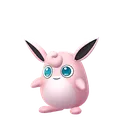
胖可丁一般妖精86.5一般撒嬌特殊冰凍之風、高速星星查 IV
完整排名（1154 隻）與自己的 IV 名次，請用 PvP IV 排名查詢工具。
超級聯盟常見問題
超級聯盟是什麼？
Pokémon GO 對戰聯盟（GO Battle League）中，寶可夢 CP 上限 1500 的聯盟。因為 CP 被限制，強度看的是屬性、招式與耐久的組合，而不是單純的高 CP，很多中低階的寶可夢反而是主力。
這份排名的分數怎麼來的？
分數來自 PvPoke 的對戰模擬：讓每隻寶可夢用推薦招式，和整個聯盟的常見對手以各種護盾數對打，綜合勝率與表現算成 0～100 的分數。分數越高，代表在目前環境越全面，但實戰仍要看隊伍搭配與對手。
★ 招式是什麼意思？
標 ★ 的是「傳說招式」：目前只能在特定活動或用厲害招式學習器學到。如果你的寶可夢沒有這個招式，強度會比排名低。
為什麼 PvP 要找低攻擊的 IV？
CP 公式裡攻擊的權重最高。在 1500 的上限內，攻擊 IV 低、防禦與 HP 高的個體可以升到更高等級，總能力值（統計值乘積）反而更大。想知道你手上那隻的 IV 排第幾，可以用 PvP IV 排名工具查。
排名多久更新？
資料來自 PvPoke 的排名，賽季或招式平衡調整後會跟著變動；本頁會定期重新產生，頁首顯示最近一次更新日期。
找到想練的寶可夢了？
用 PvP IV 排名工具查你手上那隻的 IV 在超級聯盟排第幾，以及要升到幾級、CP 多少。